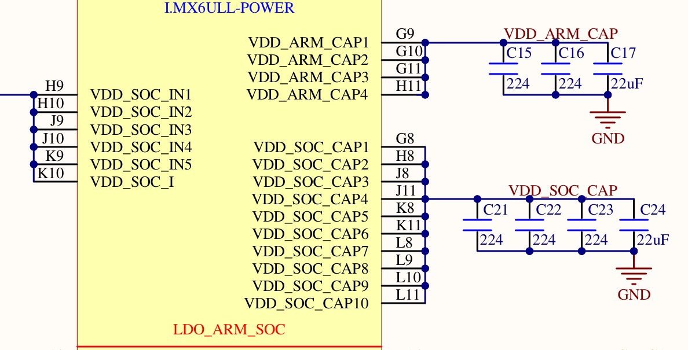

核心板第 2 页：SoC 电源球与「只装电容」的脚
CORE p2 是 U1A（IMX6ULL-POWER）这一块芯片符号的电源侧。它把 400 多个球里与「电」有关的全部集中在一页：哪些球要外部送电（IN），哪些球只能接电容、绝不能接电源（CAP）。这一组规则是读懂 i.MX6ULL 电源设计的第一道门槛，也是新手最常炸芯片的地方。

新窗口打开读完这一章，你应该能
- 区分 IN 球与 CAP 球：一个要外部供电，一个只接电容
- 说出 VDD_ARM_CAP / VDD_SOC_CAP 为什么各要 4 球与 10 球（内部 LDO 分段）
- 解释 224 的含义（0.22µF）与为什么用 224 而不是 104
- 算出 CAP 脚去耦的容值下限与 ESL 目标，理解「就近 5mm」的意义
- 看懂 VDD_COIN_3V 支路的 D1/D2 + R34 1.5K + C31，知道后备电池怎么接
3.3.1IN 与 CAP：两种完全不同的球
| 组 | 球位 | 接到哪 | 性质 |
|---|---|---|---|
| VDD_SOC_IN1–5 + VDD_SOC_I | H9,H10,J9,J10,K9,K10 | 网络 VDD_ARM_SOC_IN（1.35V） | 外部供电输入 |
| VDD_ARM_CAP1–4 | G9,G10,G11,H11 | 只接 C15/C16 224 + C17 22µF | 内部 LDO 输出，仅去耦 |
| VDD_SOC_CAP1–10 | G8,H8,J8,J11,K8,K11,L8,L9,L10,L11 | 只接 C21/C22/C23 224 + C24 22µF | 内部 LDO 输出，仅去耦 |
| VDD_HIGH_IN / VDD_HIGH_CAP1–2 | N13 / R14,R15 | VDD_HIGH_IN 外部 / C27 224+C28 22µF | 输入 + 内部输出 |
| VDD_SNVS_IN / VDD_SNVS_CAP | P12 / N12 | SNVS_3V3 / C29 224+C30 22µF | 输入 + 内部输出 |
| NVCC_PLL | P12/P13 | C32 224 | 内部 PLL 电源，仅去耦 |
| VSS1–23 + VSS47 | 23 个球 + U17 | GND | 地 |
最关键的判据：CAP 球在图上没有电源符号，只有一根线连到电容。如果你看到有人把 3.3V 直接焊到 VDD_ARM_CAP，那不是「增强供电」，是拿外部电源去顶内部 LDO 的输出——轻则 LDO 保护、重则永久损坏。
3.3.2为什么 CAP 球有 4 个、10 个这么多
i.MX6ULL 内部有多组 LDO，给 CPU 内核、SOC 逻辑、PLL 等分别供电。每个 LDO 的输出在封装内走到不同的球，球数多是因为：
- 电流分散：内核在 528MHz 全速时峰值电流可达安培级，单个球的电流能力有限（约 0.3–0.5A），必须并联多个；
- 降低寄生电感：多球并联把封装电感从 ~1nH 降到 ~0.3nH，高频去耦才有效；
- 芯片内部布线：不同模块的 LDO 输出本来就在不同区域，物理上就是多个焊盘。
VDD_SOC_CAP 有 10 个球，是因为 SOC 逻辑域面积最大、负载最重；VDD_ARM_CAP 4 个球，对应 CPU 内核那一块。
3.3.3224 是什么：0.22µF 的「中间容量」
三位数标注法：224 = 22×104 pF = 220000pF = 0.22µF。为什么不直接上 104（0.1µF）或 22µF？
- 104（0.1µF）：谐振频率高（约 10–20MHz），负责高频；但容量小，对 ms 级的负载跳变储能不足。
- 22µF：储能足，但 ESL 大，高频阻抗反而高，且谐振点低（约 1–2MHz）。
- 224（0.22µF）：介于两者之间，谐振约 5–8MHz，正好覆盖 CPU 负载跳变的主要频段（开关电源环路带宽 ~100kHz–1MHz 与内核时钟谐波之间）。
所以本板用「224 多个 + 22µF 一个」的组合：224 贴近球放（负责中高频），22µF 稍远（负责低频储能）。这是典型的三段式去耦（大电解/钽 + 中容陶瓷 + 小容高频）。
3.3.4去耦的硬指标：距离、过孔、回路
- 距离 ≤ 5mm：电容到球焊盘的走线越短越好。走线每 1mm 约 0.2nH，5mm 就是 1nH，与电容自身 ESL（0.5–1nH）同量级——再远，电容就"失效"了。
- 过孔打在焊盘旁：电容的地端必须有自己的过孔到地平面，不能借用球的过孔。一个过孔约 0.3–0.5nH。
- 回路面积最小：电容—球—地平面构成环路，环路越小，辐射与感应越小。BGA 下方铺地平面，电容放在背面正对球位是最佳布局。
- 不要串磁珠：CAP 脚前面串磁珠会与内部 LDO 形成谐振，可能自激。
算一个直观的数字：若某 CAP 球需要 1A 的 10ns 电流阶跃，允许电压跌落 30mV，则所需电容 C=I·Δt/ΔV=1×10n/0.03≈333nF。224（220nF）×3 颗并联 = 660nF，留 2 倍余量——这就是「为什么是 3 颗 224 而不是 1 颗」。
3.3.5VDD_COIN_3V 支路：后备电池怎么接
本页右下角还有一条小支路：D1/D2（RB521S-30 肖特基）+ R34 1.5K + C31 224，网络名 VDD_COIN_3V。它的作用是把纽扣电池（3V）与 SNVS 3.3V 做「或」：
- 主电源在时，SNVS_3V3 通过 D2 给 VDD_SNVS 供电，电池被 D1 反偏隔离，不放电；
- 主电源断时，电池通过 D1 供电，D2 反偏，防止电池倒灌给整板；
- R34 1.5K 是限流（也是电池检测分压的一环），C31 224 去耦。
图上注释写明「Confirm the coin cell discharge curr > 40uA if used」——意思是如果真装纽扣电池，要确认放电电流大于 40µA（否则某些电池的钝化层会导致接触不良）。这句注释是设计者留给你的验算题。
3.3.6这一页的诊断价值
当板子「1.35V 有、但就是不起」时，量 CAP 脚：
| 现象 | 判据 | 可能原因 |
|---|---|---|
| VDD_ARM_CAP 无电压 | 0V | 内部 LDO 未使能（VDD_SOC_IN 未到 / 复位未释放） |
| CAP 电压 ≈ IN 电压 | 两者几乎相等 | 内部 LDO 旁路模式（正常，某些配置下 LDO 直通） |
| CAP 电压抖动 | 纹波 > 50mV | 去耦不足 / 电容虚焊 / 地平面断裂 |
| CAP 短路到地 | 对地电阻 < 10Ω | 芯片损坏（最常见于静电/过压后） |
注意 CAP 脚不能用外部电源"补电"来验证——正确做法是查内部 LDO 的使能条件（VDD_SOC_IN、POR_B、PMIC_ON_REQ）。